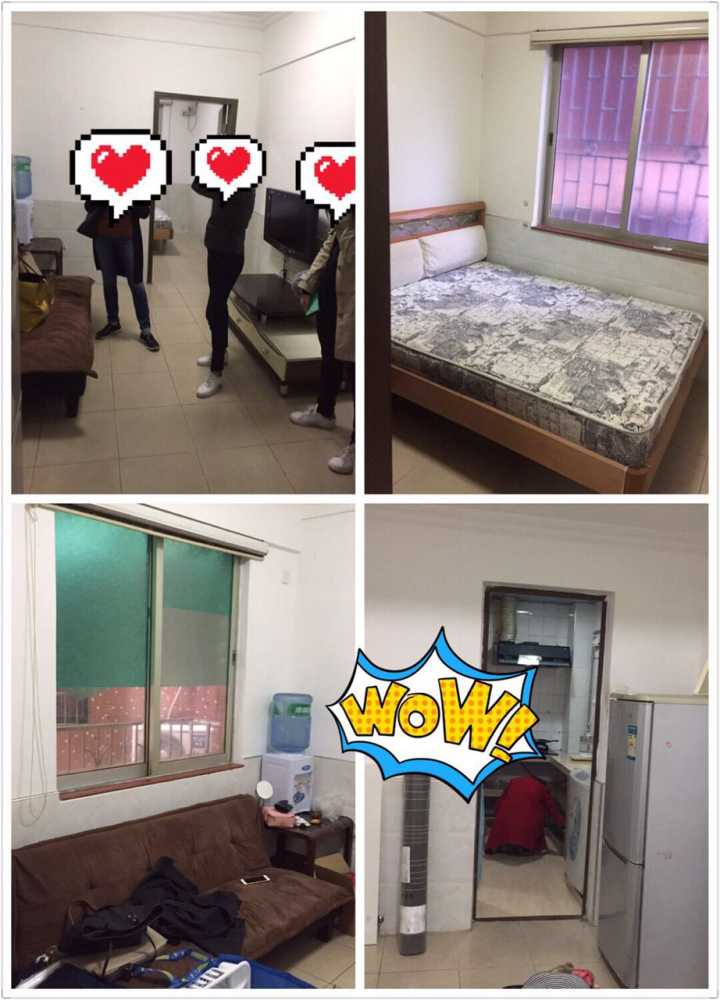
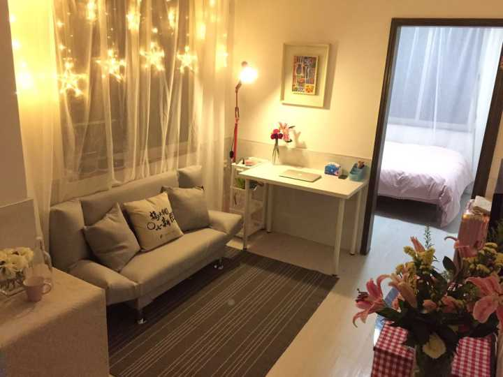
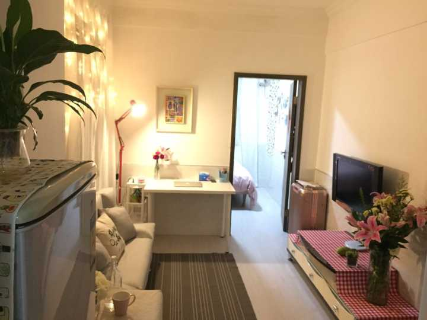
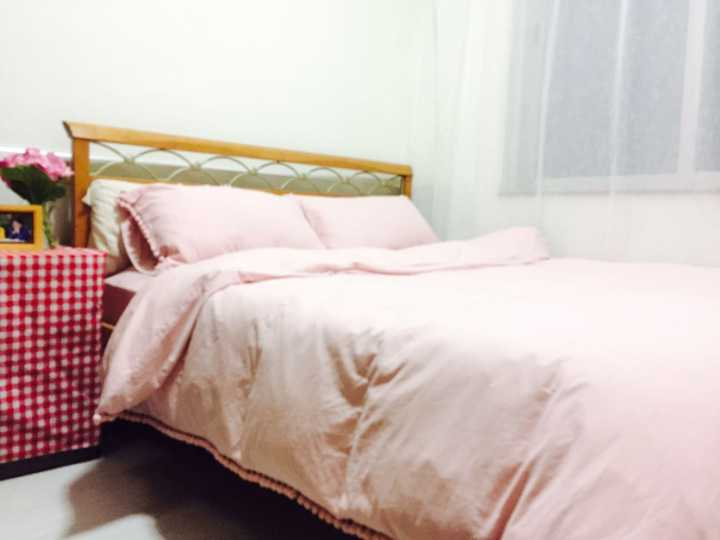
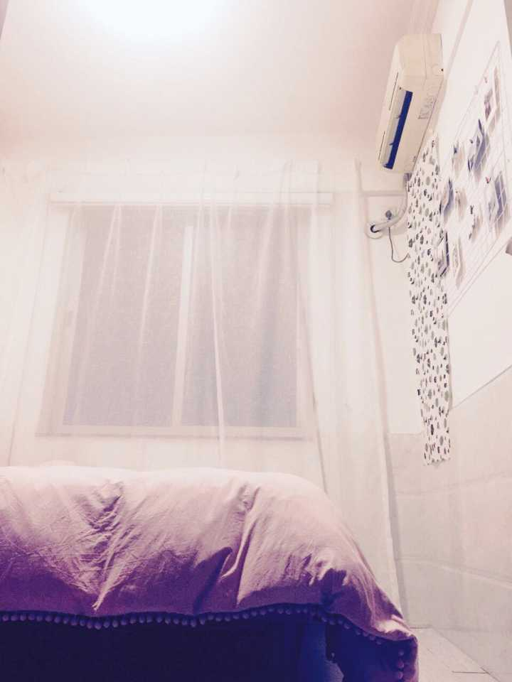
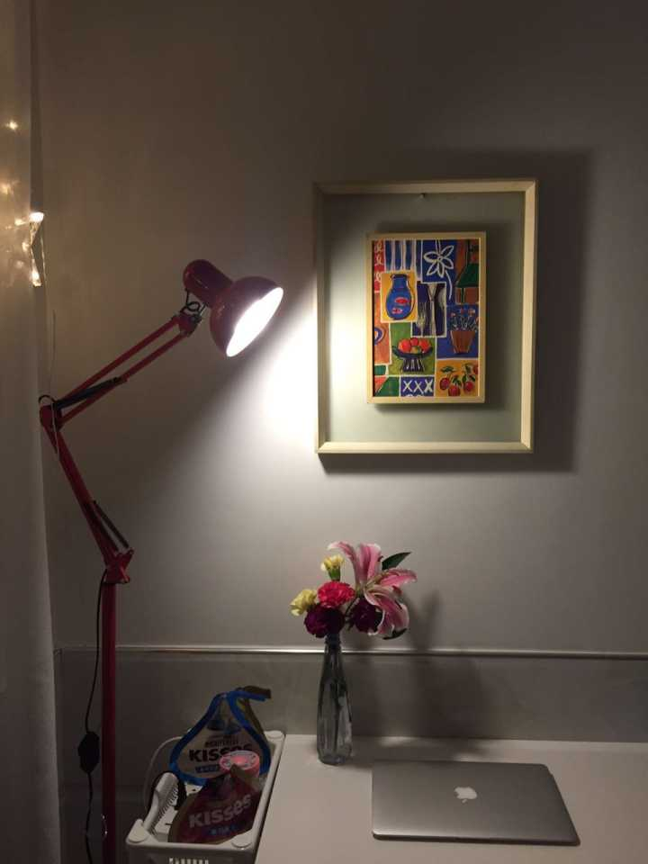
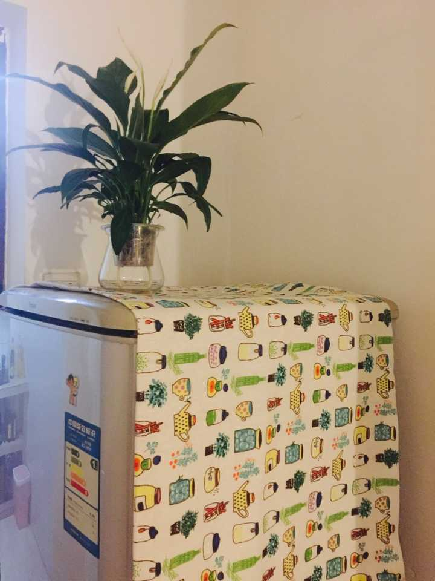
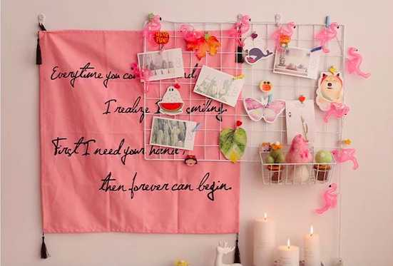

怎么把租房装修成舒适的小窝？
女生，33平一居室，花费1500元以内，搬家购物软装耗时5天，避免打洞。
所有物品：万能的淘宝+宜家。 链接和过程分享给大家~~
before

after






动手前，扒各种参考（知乎搜“租房装饰”之类关键词就有很多），明确自己想要的风格，就可以开始啦：
一、定基调
结合自己的喜爱和房子硬件条件。
我的房子户型小，采光差，本人偏爱极简、温馨。所以，定下主色调：白、灰为主+红色点缀
（其实最初定的主色调是白、灰、粉，后来发现粉色实在太难配了，一不小心就显俗气，所以，粉色和红色都变成小点缀）
二、关键要素
1、地板 - 白，让屋子更明亮
我选的pvc地板革，容易操作，和闺蜜两个女生贴了七八个小时搞定客厅卧室。393元。
淘宝： http://c.b1wt.com/h.eqcLeW?cv=RxC8nA2gcz&sm=512fdd
2、地毯 - 配合地板，随处可席地而坐能让家里显得更温馨
宜家79元。
3、灯- 暖光，一定要暖光营造氛围 （因为家里顶灯都是白光），沙发边的落地灯、窗纱后的星星灯是提升格调利器 。落地灯113元，星星灯59元。
星星灯： http://c.b1wt.com/h.eqX7Fv?cv=oJWpnAdDCw&sm=0e1495
落地灯：http://c.b1wt.com/h.eqXpEX?cv=FUTQnAWMmy&sm=f2712a
4、绿植鲜花- 很低的花费就会给自己好心情，觉得在认真生活
一定要去当地花卉市场啊！！我在广州，跑了一趟岭南花卉市场（地铁滘口站），抱回来各色鲜花绿植花瓶，自己回来修修剪剪弄了7束~总共花费 150以内。 （20块能有十几支百合，15块有18支白玫瑰，绣球一枝才15…… 赶上下午5点左右花卉市场快要关门，价格会更便宜）
5、窗纱- 窗户大很影响视觉，原来的窗户很丑，挂上白纱，浪漫感一下有了。客厅卧室两个窗纱，共96元。
装窗纱最讨厌打洞了，一方面要跟房东沟通，另一方面操作起来也麻烦，所以，我直接用了无痕钉（星星灯送的），然后用挂钩式的窗帘，轻松搞定。
6、布-各种布，能让一切丑的家具瞬间变美，还便宜。花费100以内。
落地灯是红色，所以大电视柜用了红白格子呼应；沙发是灰色，所以旁边的茶几用素雅的颜色。冰箱要用鲜艳生动的颜色。
布： http://c.b1wt.com/h.3zEaKy?cv=D69mNgHcf0&sm=06269e
网格照片架： http://c.b1wt.com/h.eqemwJ?cv=W2oanA6R5i&sm=be131a
卧室有一面墙被空调漏水浸得脱皮了，墙纸都不好贴，当时超头痛，用一块布当背景，加上网格照片架，这面墙马上变得很有氛围！类似这样 我自己另买布搭配的。

三、家具替换：
1、沙发- 沙发几乎决定了客厅的感觉，旧沙发又丑又脏，所以怎样都要自己换一个。沙发一定要符合主色调，选灰色，麻布不容易显得旧。我因为到时候带不走，选的最便宜的，加上运费333元~ （沙发一般送到楼下，快递小哥说这个太重，特别贴心地给送进了家里！！感谢！）
沙发： http://c.b1wt.com/h.eq3a4U?cv=gQtKnA5Tb7&sm=c69db3
2、桌子- 因为我在家办公的时间比较多，书桌是一定需要的。
宜家119元。（我选的最简单的款式，淘宝上也有很多更便宜的）
3、床上用品- 我有个像天使一样的闺蜜，她说一定要给我一套柔软舒适温暖又粉嫩的床品，在宜家给买了羽绒被芯、淘宝上找了好多家最后找到粉粉的四件套。整张床一下变得蓬松诱人，看着都很舒服！！整个花费也有小一千，这个不算在家装里~ 只是深深感觉到床上用品绝对是提升幸福感很重要的一个因素哦~~
各种水杯、餐具对家里格调也有影响，去宜家逛是很棒的参考，慢慢囤。
最后的tips：淘宝大件的时候注意看是否包邮，不然自己拿不动；比较着急赶紧收拾完家的注意看店铺所在城市，选离自己近的。
就这样，搞定啦~~ po图在票圈，房东阿姨都惊呼不敢相信……